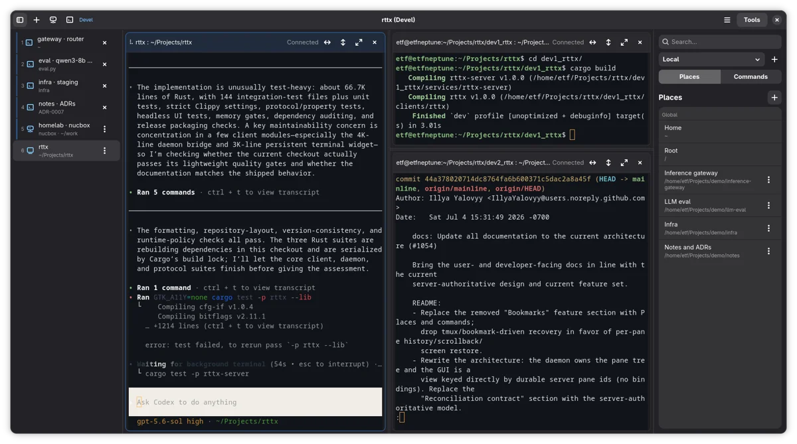
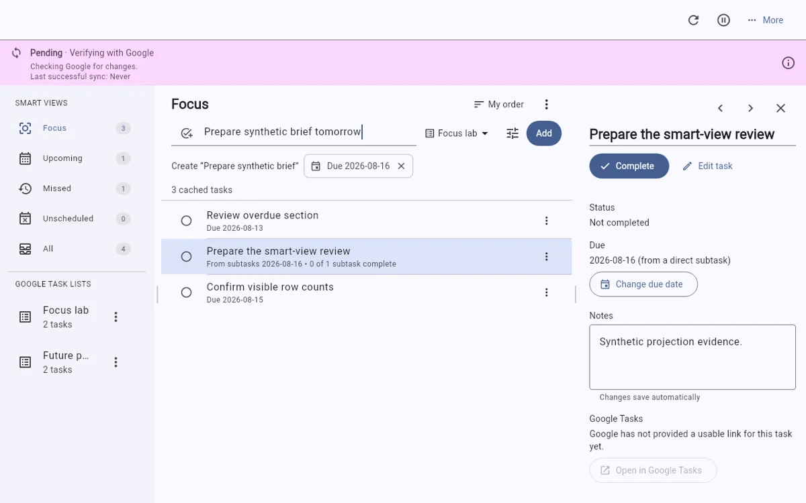
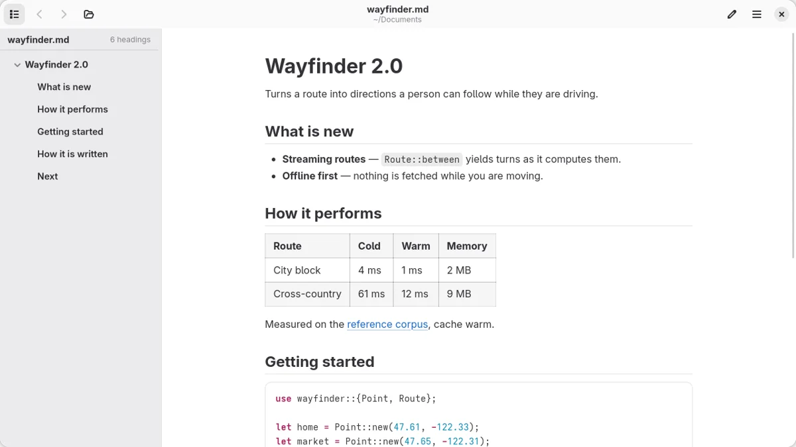
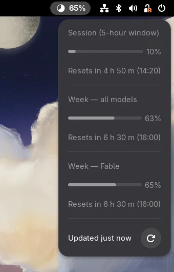
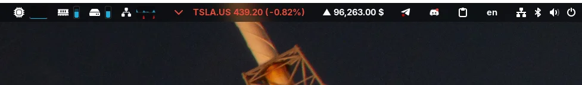
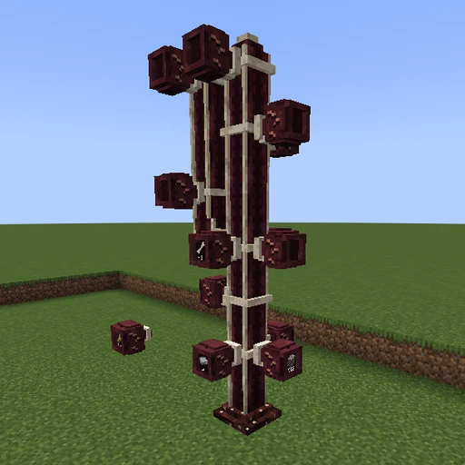
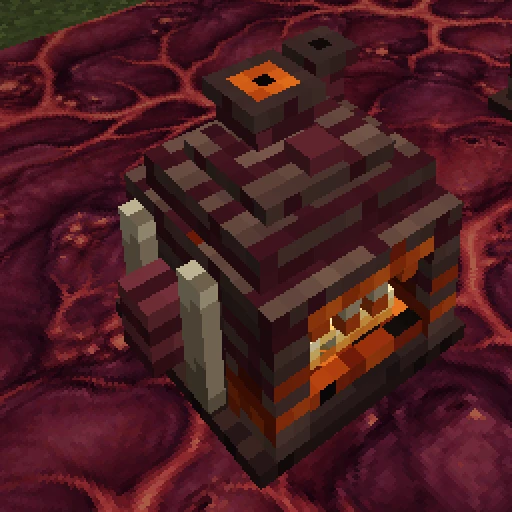
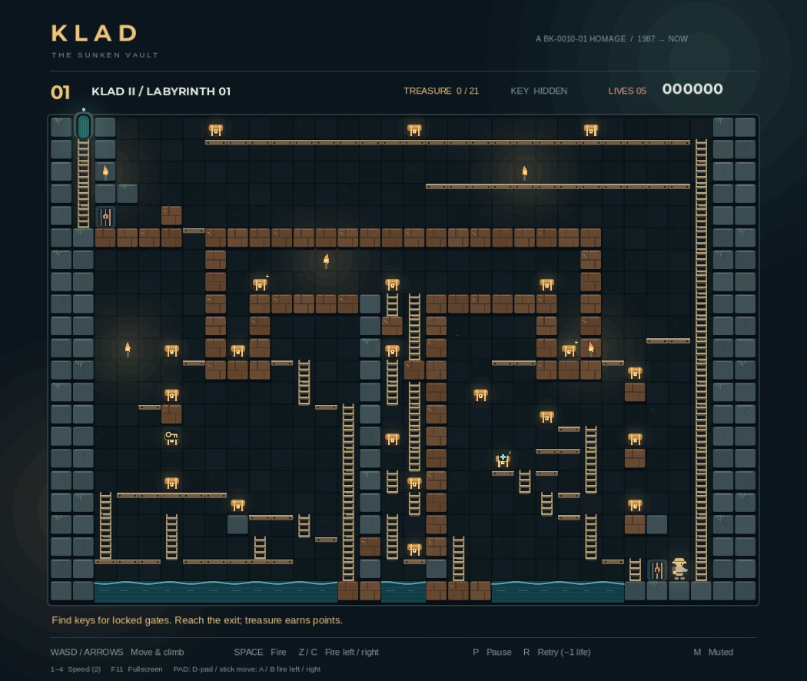
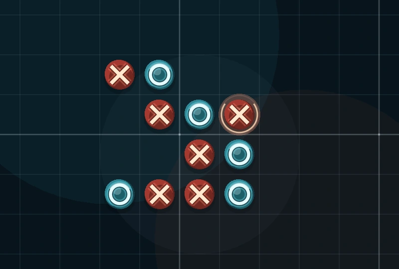

rttx
Arrange terminal panes in named workspaces and keep frequently used commands within reach.
Applications, extensions, developer tools and games by Illya Yalovyy.
| Project | Version | Published (UTC) |
|---|---|---|
| Axiotask | v1.5.10 | |
| rttx | v1.1.4 | |
| AI Quota | v0.3.0 | |
| Pulse | v0.5.0 | |
| axiomd | v1.0.0 | |
| Claudometer | v0.1.0 |
Arrange terminal panes in named workspaces and keep frequently used commands within reach.

On Debian or Ubuntu, download the amd64 DEB and install it with apt. Fedora COPR and Flatpak instructions are also available.
Manage Google Tasks offline with quick capture, smart views, search and bulk edits.

Download the RPM, DEB or Flatpak for Linux. On Android, install the signed APK on a device with Google Play Services and choose Connect.
Read Markdown files in a native GNOME viewer with support for tables, images and GitHub-style formatting.

Use the Fedora RPM from the release, or build with cargo build --release and run scripts/install.sh --user from the checkout.
A file manager derived from COSMIC Files, focused on everyday usability and reliable file operations.
Follow the RPM or Pop!_OS DEB packaging guide. Installing Wayfarer replaces the system COSMIC Files package.
See how close Claude Code and Codex are to their usage limits directly in the panel or dock.
Install the Fedora 45 x86_64 release RPM with dnf, then add AI Quota to your panel or dock in COSMIC Settings.
Track system resources in the panel, with a meter for each CPU core and detailed readings a click away.
Download the Fedora 45 x86_64 RPM and SHA256SUMS, verify the checksum, install with dnf and add Pulse to the panel.
Monitor Claude Code and Codex usage limits from the GNOME top bar.

Install the release ZIP with gnome-extensions install --force followed by the ZIP filename. Log back in and enable Claudometer.
Rotate stock prices in the top bar and receive alerts when a ticker crosses a configured threshold.

Link the extension into your user extensions directory, compile its schemas, log back in and enable Stock Dock in Extensions.
Supervise AI coding tasks from a terminal workspace with review gates and observable success criteria.
From a checkout, run cargo run --locked -- --demo to explore the interface. Use make install for the ktask command.
A Rust IDE workbench with a docked source tree, tabbed documents and a reusable plugin platform.
Clone the repository and run cargo run from its root to start the workbench.
Render an MP3 as a music-reactive video using shader presets and GPU or software rendering.
Install FFmpeg, clone the repository and run cargo install --path crates/avz-cli. Check the installation with avz --version.
A proposed graph-based outliner for daily journaling, search and note discovery.
The repository currently contains design documents. Read the project vision for the planned workflow.
Grow and evolve a living industrial colony across the Overworld, Nether and End.

Built for Minecraft Java Edition 1.21.1 with NeoForge. A public download has yet to be confirmed.
A technical preview of Infestus Frontier with an in-game guidebook, advancements and JEI recipe lookup.

Targets Minecraft 1.21.1, NeoForge and Java 21. The pack recommends 6 GB of memory and a new world. A public installer has yet to be confirmed.
A remake of the 1987 BK-0010-01 maze game. Climb ladders, collect treasure and find keys to open gates while evading the keepers. Explore 80 recovered mazes and five bonus rooms.

Take turns placing Xs and Os on an open-ended grid. Line up five horizontally, vertically or diagonally to win. Play against a friend on the same device or challenge the computer.
